Примеры решения систем линейных неравенств с одной переменной
Несколько линейных неравенств, удовлетворяющих одним и тем же решениям, образуют систему.
Рассмотрим простейший пример. Система
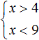
состоит из двух неравенств, которые уже решены.Решениями первого неравенства являются все числа, которые больше 4. Решениями второго неравенства являются все числа, которые меньше 9.
Изобразим множество решений каждого неравенства на координатной прямой и запишем ответы к ним в виде числовых промежутков:
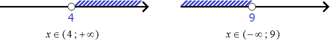
Но дело в том, что неравенства x > 4 и x < 9 соединены знаком системы, а значит зависимы друг от друга. Им не дозволяется раскидываться решениями как им захочется. Наша задача указать решения, которые одновременно будут удовлетворять и первому неравенству и второму.
Говоря по-простому, нужно указать числа, которые больше 4, но меньше 9. Очевидно, что речь идет о числах, находящихся в промежутке от 4 до 9.
Значит решениями системы являются числа от 4 до 9. Границы 4 и 9 не включаются во множество решений системы, поскольку неравенства x > 4 и x < 9 строгие. Ответ можно записать в виде числового промежутка:
x ∈ ( 4 ; 9 )
Также, нужно изобразить множество решений системы на координатной прямой.
Для системы линейных неравенств решение на координатной прямой изображают так:
Сначала указывают границы обоих неравенств:
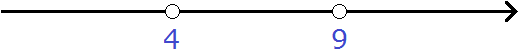
На верхней области отмечают множество решений первого неравенства x > 4
На нижней области отмечают множество решений второго неравенства x < 9
Нас интересует область, которая отмечена штрихами с обеих сторон. В этой области и располагаются решения системы . Видно, что эта область располагается в промежутке от 4 до 9. Для наглядности выделим эту область красным цветом:
Для проверки можно взять любое число из этого промежутка и подставить его в исходную систему . Возьмем, например, число 6
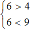
Видим, что решение 6 удовлетворяет обоим неравенствам. Возьмём ещё какое-нибудь число из промежутка (4; 9), например, число 8
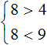
Видим, что решение 8 удовлетворяет обоим неравенствам.
Исходя из рассмотренного примера, можно сформировать правило для решения системы линейных неравенств:
Чтобы решить систему линейных неравенств, нужно по отдельности решить каждое неравенство, и указать в виде числового промежутка множество решений, удовлетворяющих каждому неравенству.
Пример 2. Решить систему неравенств
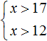
Решениями первого неравенства являются все числа, которые больше 17. Решениями второго неравенства являются все числа, которые больше 12.
Решениями же обоих неравенств являются все числа, которые больше 17.
Изобразим множество решений системы на координатной прямой и запишем ответ в виде числового промежутка.
Для начала отметим на координатной прямой границы обоих неравенств:
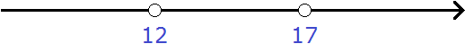
На верхней области отметим множество решений первого неравенства x > 17
На нижней области отметим множество решений второго неравенства x > 12
Нас интересует область, которая отмечена штрихами с обеих сторон. В этой области и располагаются решения системы . Видно, что эта область располагается в промежутке от 17 до плюс бесконечности. Запишем ответ в виде числового промежутка:
x ∈ ( 17 ; +∞ )
Пример 3. Решить систему неравенств
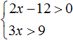
Решим каждое неравенство по отдельности. Делать это можно внутри системы. Если испытываете затруднения при решении каждого неравенства, обязательно изучите предыдущий урок
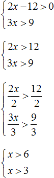
Получили систему
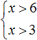
. На этом решение завершается. Осталось изобразить множество решений системы на координатной прямой и записать ответ в виде числового промежутка.Как и в прошлом примере, сначала нужно отметить границы обоих неравенств, затем отметить множество решений каждого неравенства (x > 6 и x > 3). Область координатной прямой, отмеченная с обеих сторон, будет промежутком, в котором располагается множество решений системы
x ∈ ( 6 ; + ∞ )
Пример 4. Решить систему неравенств
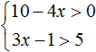
Решим каждое неравенство по отдельности:
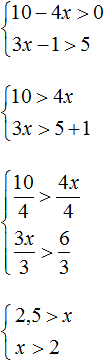
Изобразим множество решений системы
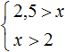
на координатной прямой и запишем ответ в виде числового промежутка: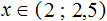
Пример 5. Решить неравенство
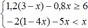
Решим каждое неравенство по отдельности:
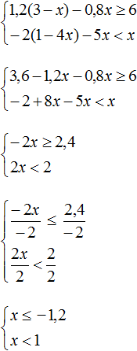
Изобразим множество решений системы
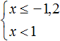
на координатной прямой и запишем ответ в виде числового промежутка: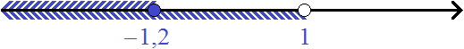
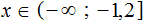
Когда решений нет
Если неравенства, входящие в систему, не имеют общих решений, то говорят, что система не имеет решений.
Пример 1. Решить неравенство
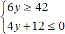
Решим каждое неравенство по отдельности:
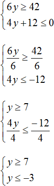
Решениями первого неравенства являются все числа, которые больше 7, включая число 7. Решениями второго неравенства являются все числа, которые меньше −3, включая число −3.
Видим, что у данных неравенств нет общих решений. Увидеть это наглядно позволит координатная прямая. Отметим на ней множество решений каждого неравенства:
На координатной прямой нет областей, которые отмечены штрихами с обеих сторон. Это говорит о том, что неравенства y ≥ 7 и y ≤ −3 не имеют общих решений. Значит не имеет решений система
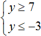
А если не имеет решений приведённая равносильная система , то не имеет решений и исходная система
Ответ: решений нет.
Пример 2. Решить систему неравенств
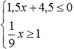
Решим каждое неравенство по отдельности:
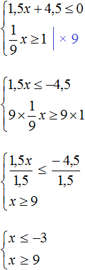
Изобразим множество решений неравенств x ≤ −3 и x ≥ 9 на координатной прямой:
Видим, что на координатной прямой нет областей, которые отмечены штрихами с обеих сторон. Значит неравенства x ≤ −3 и x ≥ 9 не имеют общих решений. А значит не имеет решений система
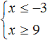
А если не имеет решений приведённая равносильная система , то не имеет решений и исходная система
Ответ: решений нет.
Пример 3. Решить систему неравенств
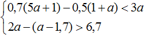
Решим каждое неравенство по отдельности:
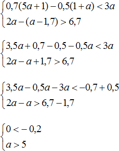
Получили неравенства 0 < −0,2 и a > 5. Первое неравенство не является верным и не имеет решений. Решением второго неравенство a > 5 являются все числа, которые больше 5. Но поскольку первое неравенство не будет верным ни при каком a, то можно сделать вывод, что у неравенств нет общих решений. А значит не имеет решений исходная система
Ответ: решений нет.
Задания для самостоятельного решения
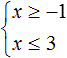
Показать решение
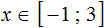
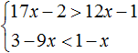
Показать решение
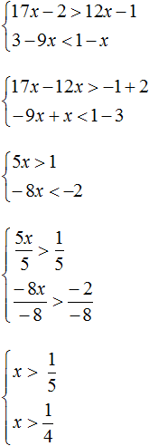
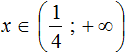
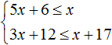
Показать решение
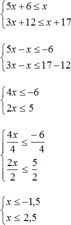
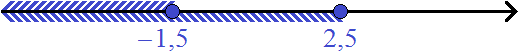
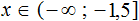
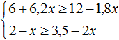
Показать решение
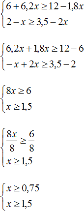
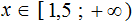
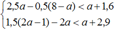
Показать решение
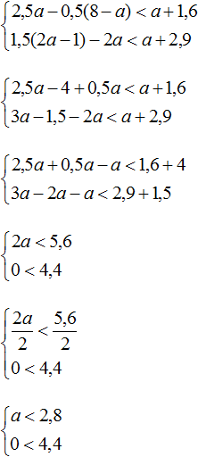
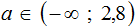
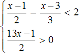
Показать решение
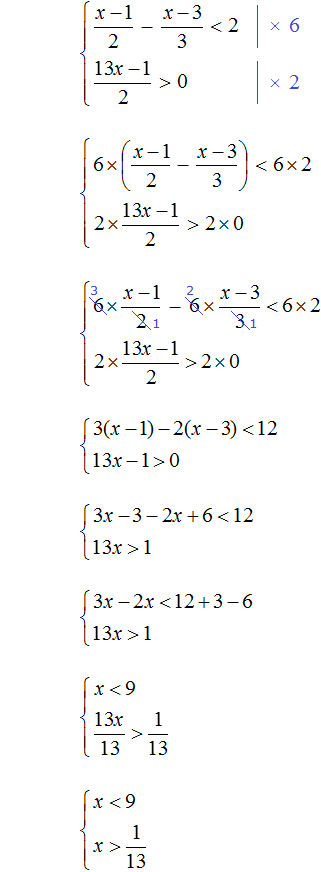
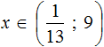
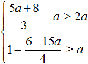
Показать решение
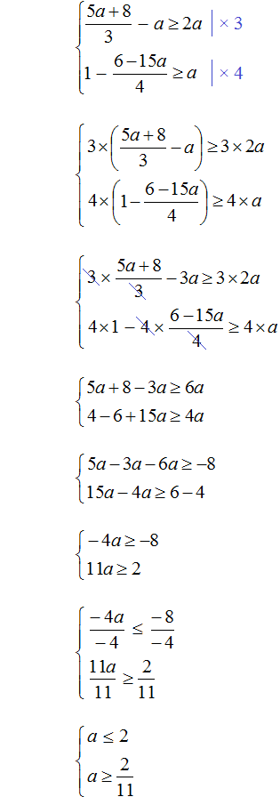
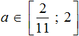
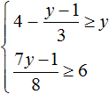
Показать решение
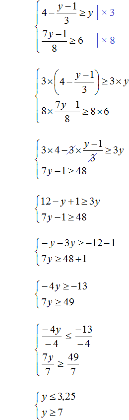
Решений нет
Возникло желание поддержать проект?
Используй кнопку ниже